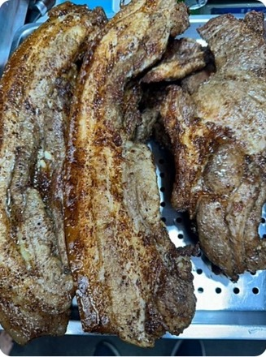
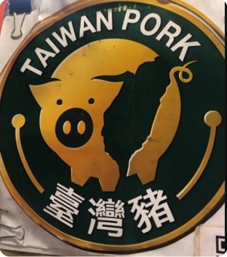

♨️ 買回家怎麼加熱？
鹹豬肉、香腸已經烤熟，食用前可以使用微波爐、烤箱或電鍋加熱。依份量與設備調整時間，確保中心充分熱透。
小秘訣：避免過度加熱，以免肉汁流失、口感變乾。
世記現烤鹹豬肉創立 35 年，堅持使用新鮮臺灣溫體豬，手工裁切、用心現烤。
香腸堅持不加粉、不添加防腐劑，不以濃烈的黑胡椒或高粱氣味搶走食材本身的風味，希望大人、小孩都能喜歡這份熟悉的好味道。
從市場裡的一面黃色招牌，到餐桌上的一道好菜，這份味道陪伴了許多家庭。

真實攤位與商品照片，感受現場的熱鬧與現烤香氣。


依據官方 LINE 帳號目前顯示的商品分類整理；價格依店家 LINE 回覆整理，重量計價商品依實際秤重為準。

店家介紹：採用臺灣溫體豬，手工裁切，非冷凍機器切割。搭配現烤香氣，呈現鹹豬肉的風味。
NT$31／兩 · 每塊約 NT$250～300
店家表示香腸不加粉、不添加防腐劑，風味溫和，沒有強烈黑胡椒或高粱的嗆鼻味。
NT$23／兩 · 每條約 NT$200 🍗
🍗現烤熟食，歡迎透過官方 LINE 詢問供應與預訂。
NT$90／隻 🍖
🍖現烤熟食，歡迎透過官方 LINE 詢問供應與預訂。
NT$25／隻鹹豬肉、香腸、雞腿可選真空包裝，與現烤同價。減少與空氣接觸，方便冷藏、旅行、露營與親友分享。
真空包裝可減少冰箱異味接觸食物，但仍需維持適當冷藏或冷凍溫度。真空包裝請至少提前 3 天預訂。
拜拜供品也方便：可連同完整密封包裝擺上供桌，減少蚊蟲接觸與香灰沾附食物；拜拜期間仍須留意熟食離開冷藏的時間，避免高溫久放。
雞翅不提供真空：因尖端容易刺破真空袋，造成密封失效。
保存期限為店家提供資訊，請以實際包裝標示及保存條件為準。真空不代表可常溫保存；冷藏食品在室溫下請勿久置。
詢問預訂
現烤商品請至少提前一天預訂；真空包裝請至少提前三天預訂。可指定營業日的市場與取貨時間，訂單需經店家 LINE 回覆確認。
先查看鹹豬肉、香腸、雞腿及雞翅。
鹹豬肉與香腸按重量計價，實際金額以秤重為準；再確認供應情況與數量。
透過官方 LINE 的「我要點餐」功能確認訂單。
現烤商品：至少提前 1 天。真空包裝：至少提前 3 天。僅可選擇當天有出攤的市場，並在該市場營業時間內取貨。
以下是預訂詢問訊息產生器，不會自動送出訂單，也不代表店家已接受預訂。商品重量與總價須由店家確認。
世記現烤鹹豬肉的鹹豬肉與香腸皆為熟食，適度回溫即可享用。以下整理店家提供的料理建議與食用提醒。
鹹豬肉、香腸已經烤熟，食用前可以使用微波爐、烤箱或電鍋加熱。依份量與設備調整時間，確保中心充分熱透。
小秘訣：避免過度加熱，以免肉汁流失、口感變乾。
當天食用：建議儘快享用；若無法立即食用，請及時冷藏，不宜整天放在室溫。
非當日食用：店家建議冷藏可保存約 3 天；需儘速冷藏並維持 4°C 以下，食用前取出充分加熱。若包裝有標示，以標示為準。
鹹豬肉切片後，可以炒蒜苗或炒洋蔥，香氣十足；喜歡吃辣的朋友，再加入少許辣椒，風味更豐富。
香腸炒高麗菜：將香腸切成條狀，與高麗菜一起拌炒。
香腸炒飯：將香腸切丁，加入米飯及喜愛的配料一起炒，就是香噴噴的香腸炒飯。
從市場現場到美食分享，看看更多關於世記的故事。
店家提供的現場影片，可直接在手機或電腦播放。
閱讀部落格文章，從不同角度認識世記現烤鹹豬肉。
閱讀原始文章 ↗觀看 Facebook 上的分享影片。若平台限制嵌入，仍可透過原始連結觀看。
觀看 Facebook 影片 ↗我們在不同市場為大家服務，出發前請確認當日市場及營業時段。週六有兩個市場攤位。
依臺灣時間查詢中…
13:30–18:30
新北市淡水區民族路29巷
全聯福利中心正對面
14:00–18:30
臺北市內湖區文德路66巷13弄
小林髮廊旁邊
07:00–12:00
臺北市中山區北安路476巷24號1樓前
開啟 Google 地圖 ↗08:00–13:00
臺北市士林區通河街323之1號
攤位98號
07:00–12:00
臺北市北投區中和街320巷2號正對面
攤位25號
以上為店家提供的固定出攤資訊；臨時休市、天候或供應異動請以店家最新公告為準。
店家在 LINE 回覆中表示，鹹豬肉採用臺灣溫體豬手工裁切，並展示「臺灣豬」標章及溯源 QR Code。

以上為店家提供的圖片及說明，網站尚未獨立核實認證有效性。
可透過官方 LINE 詢問最新營業及供應資訊。
聯繫官方 LINE目前已確認的分類有鹹豬肉、香腸、雞腿及雞翅。
鹹豬肉 NT$31／兩（每塊約 NT$250～300）；香腸 NT$23／兩（每條約 NT$200）；雞翅 NT$25／隻；雞腿 NT$90／隻。重量計價品項依實際秤重為準。
週六有大直市場（07:00–12:00）與士林劍潭福華市場攤位98號（08:00–13:00）。
可以使用官方 LINE 的「我要找老闆」功能，或前往官方 LINE。
接受現金、LINE Pay 與 TWQR。
現烤商品至少提前一天，真空包裝至少提前三天。需由店家確認供應與取貨安排。
可以指定市場與時間，但只能選擇該日有出攤的市場，且須在營業時間內取貨。
店家提供的是熟食，回家後以微波爐、烤箱或電鍋充分加熱即可。避免加熱過久，影響肉汁與口感。
店家建議冷藏約 3 天；請儘快放入 4°C 以下冰箱，食用前充分加熱。常溫放置請遵守食品安全時間限制。